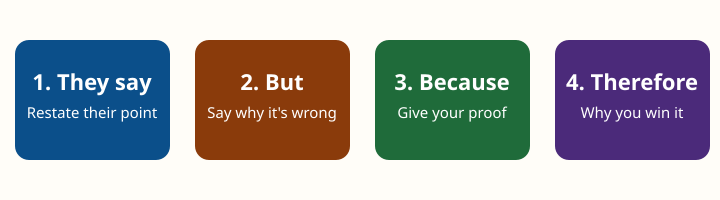

Worked Example: Should Schools Ban Phones?
Let's build a full argument together, step by step. Every step matches a step in the Make Your Case assessment, so you can follow the same path with your own topic.
Photo 3 (your own photo or an AI-generated image): phones in a classroom phone caddy or pouches.
Draft alt text: "A row of student phones stored in numbered pockets of a hanging organizer on a classroom wall."
Caption: "Photo by [Your Name]." or "Image generated with [AI tool name] by [Your Name]."
Step 1: Choose a resolution
Resolution: "Schools should ban cell phones during class time."
Why this works: It affects students directly, and reasonable people disagree about it.
Step 2: Choose a side and write a claim
Claim: Schools should ban cell phones during class time because phones distract students from learning.
Check: Does it pick a side? Yes. Is it specific? Yes (class time, not the whole day). Could someone argue against it? Yes.
Step 3: Research credible sources
| Source | Who / When | Why it's credible |
|---|---|---|
| Pew Research Center survey of U.S. public K–12 teachers | Pew Research Center, 2024 | Nonpartisan research organization; large national survey; publishes its methods. |
| Global Education Monitoring Report 2023: Technology in Education | UNESCO, 2023 | United Nations education agency; reviews research from many countries. |
Step 4: Build supporting points with CER
Point 1: Phones pull attention away from lessons
Evidence: In a 2024 Pew Research Center survey, 72% of U.S. high school teachers said students being distracted by cellphones is a major problem in their classroom.
Reasoning: If most teachers see phones as a major distraction, then many students are missing parts of lessons. Removing phones during class removes that distraction, so students can focus on learning.
Point 2: Experts recommend limiting phones in school
Evidence: UNESCO's 2023 Global Education Monitoring Report found that too much or poorly planned technology use can hurt learning, and recommended that technology like phones be used in school only when it supports learning.
Reasoning: A class-time ban follows this advice. Teachers can still allow devices for a planned activity, but phones aren't out the rest of the time.
Step 5: Rebut the strongest counterargument

- They say students need phones to reach family in an emergency.
- But a class-time ban doesn't take that away.
- Because phones are only put away during class; students keep them in their bags or a class caddy and can use the school office phone in an emergency.
- Therefore families can still reach students, and students still get distraction-free class time.
Step 6: Put it together
Here's the same argument in each of the three formats from the lesson. Pick the one closest to how you want to present.
📖 As a written case (short version)
Picture trying to learn fractions while your phone buzzes every few minutes. Schools should ban cell phones during class time because phones distract students from learning.
My first point is that phones pull attention away from lessons. In a 2024 Pew Research Center survey, 72% of high school teachers said phone distraction is a major problem in their classroom. When phones are put away, that distraction is gone, and students can focus.
My second point is that experts recommend limiting phones in school. UNESCO's 2023 report advises that technology be used in school only when it supports learning. A class-time ban does exactly that.
The other side might say students need phones for emergencies. But a class-time ban still lets students keep their phones nearby and use the office phone if needed, so families can still reach them.
In conclusion, banning phones during class protects students' time to learn while keeping them safe.
🎧 As a spoken speech
Listen to the sample speech in Part 4 of the audio walkthrough (transcript). It uses the same argument, spoken with signposts and pauses.
✋ As a visual argument map
- Claim: Ban phones during class time.
- Point 1: Phones distract → Pew 2024: 72% of teachers → no phones = more focus
- Point 2: Experts advise limits → UNESCO 2023 → ban follows the advice
- Rebuttal: Emergencies → phones stay nearby + office phone → families can still reach students
Tips from this example
📖 If you're writing
Start each paragraph with a signpost ("My first point is…") so your reader always knows where they are. Name your source in the sentence, not just at the end.
🎧 If you're speaking
Slow down on numbers ("seventy-two percent") and pause after your claim so it sinks in. Put key words on a notecard instead of reading a script word for word.
✋ If you're making a visual
Use one color for claims, one for evidence, and one for reasoning, and add labels too so the meaning doesn't depend on color. Keep text short; put details in speaker notes.
Your turn
Ready to build your own? Go to the Make Your Case assessment instructions or download the CER graphic organizer worksheet to plan first.